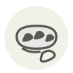

Caviar beluga ◆
Beluga caviar
| Nom latin | Huso huso (roe) |
|---|---|
| Famille | Œufs de poisson & caviar |
| Origine | Bassin caspien, aujourd'hui d'élevage |
| Saison | Toute l’année |
| Goût | Crémeux · Iodé · Délicat · Doux |
| Prix courant | 6–12 €/g |
Ce que c’est
Un esturgeon béluga peut mettre vingt ans avant de frayer une première fois : ses œufs figurent à l'annexe II de la CITES depuis 1998 et sont interdits d'importation aux États-Unis depuis 2005. Ce qui arrive aujourd'hui sur une table française vient d'élevages d'Italie, de Chine ou du Golfe, sous étiquette CITES numérotée plutôt que sous le nom d'un pêcheur.
En cuisine
Gardez la boîte entre 0 et 4 °C et ne l'ouvrez qu'à table. Jamais de cuillère en acier : la membrane est assez fine pour éclater dessous, et le métal laisse un goût ferreux — nacre, corne ou os.
S’accorde avec
Crème fraîche Beurre de baratte Œuf Pomme de terre Ciboulette Citron
Même espèce
Une erreur ici, ou un oubli ? Dites-le nous